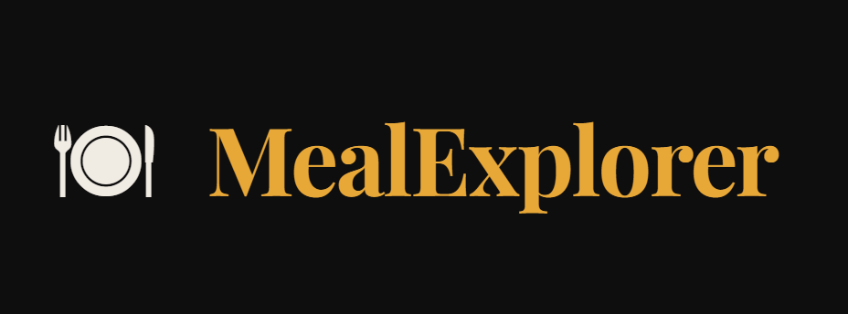
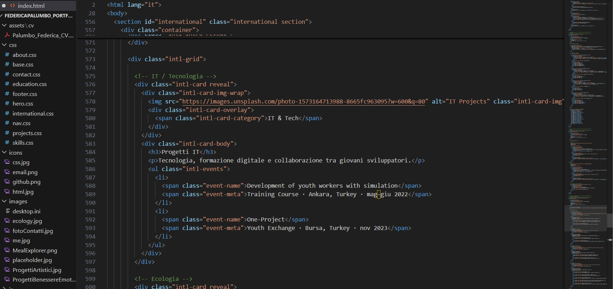
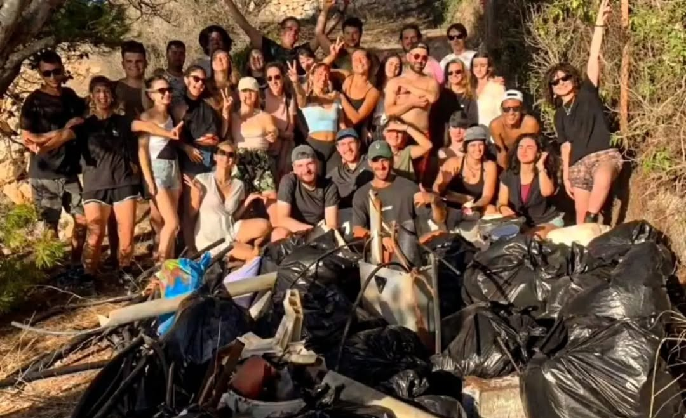
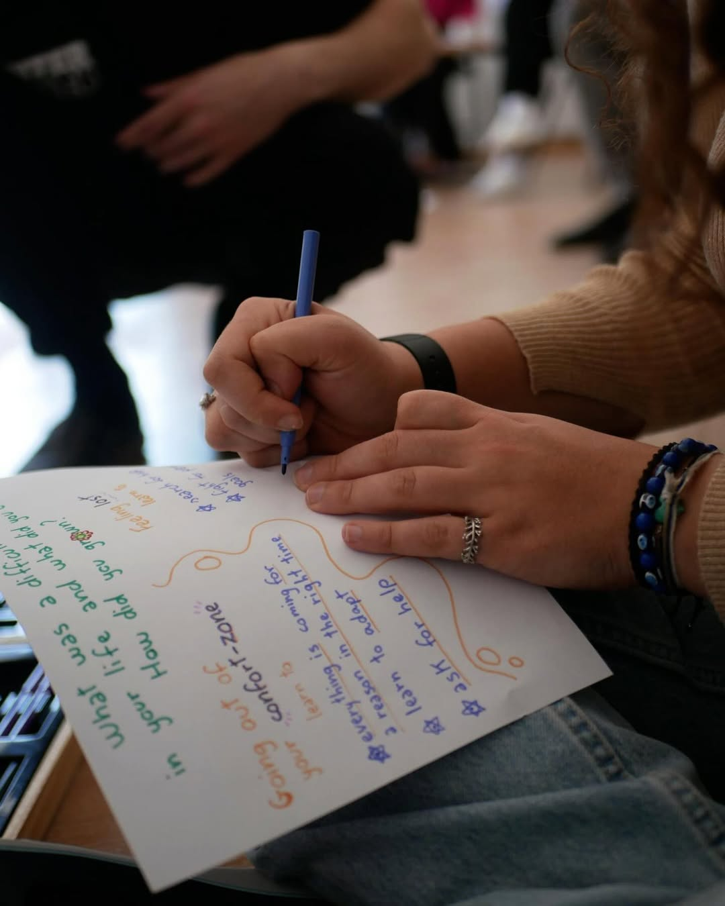
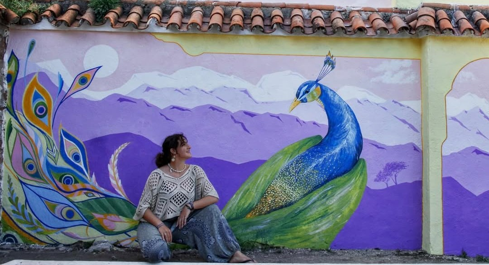
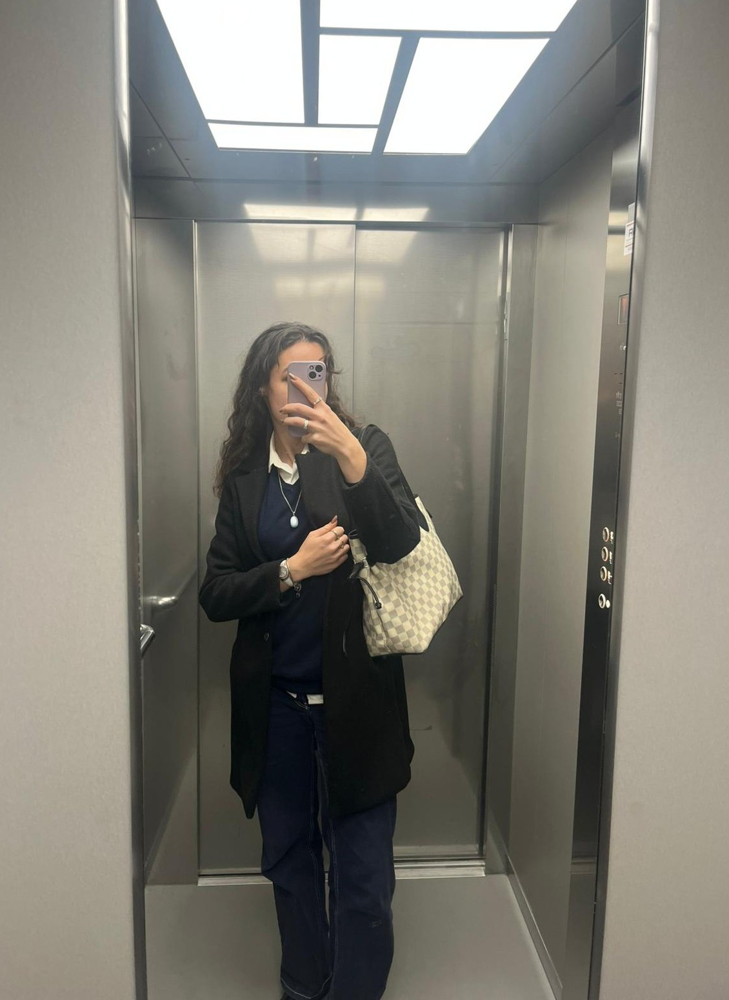

Sviluppo interfacce moderne e accessibili
con forte attenzione a UX, micro-interazioni
e pulizia visiva.
Sono una studentessa ITS in Web Development Full Stack con una forte attenzione al design dell'interfaccia e all'esperienza utente.
Mi sto formando nello sviluppo di applicazioni web con HTML, CSS e JavaScript, lavorando su progetti pratici che uniscono funzionalità e cura visiva.
Il mio obiettivo è crescere come web developer junior, contribuendo alla creazione di interfacce moderne, accessibili e ben strutturate.
Design essenziale, codice pulito,
attenzione ai dettagli.
ITS Digital Academy Mario Volpato
ITET Aulo Ceccato
Sito portfolio sviluppato in HTML e CSS, con layout responsive, micro-interazioni e forte attenzione all'UX.
Applicazione web sviluppata con HTML, CSS e JavaScript che integra l’API di TheMealDB per il recupero dinamico delle ricette, con struttura responsive, gestione delle chiamate API e navigazione intuitiva dei contenuti.

Nuovi progetti in arrivo. Stay tuned.
9+ programmi internazionali in 5+ paesi tra Europa e Asia. Ogni esperienza mi ha arricchita sia come persona che come professionista.

Tecnologia, formazione digitale e collaborazione tra giovani sviluppatori.

Sostenibilità ambientale, tutela del mare e sensibilizzazione ecologica.

Benessere emotivo, inclusione sociale e crescita personale.

Arte, cultura, inclusione e comunicazione creativa.
Aperta a collaborazioni, stage e opportunità junior.
Rispondo sempre volentieri.
